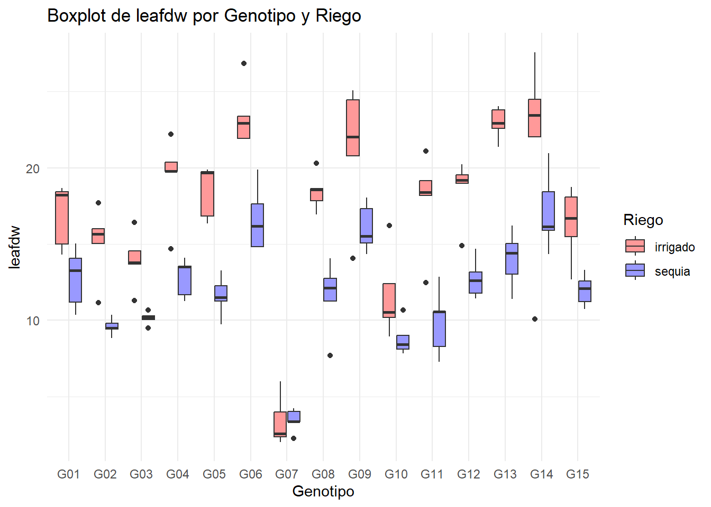
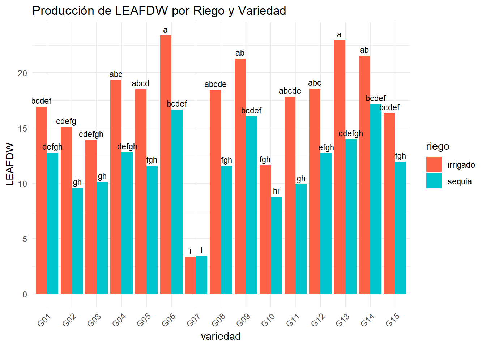

! Using an auto-discovered, cached token.
To suppress this message, modify your code or options to clearly consent to
the use of a cached token.
See gargle's "Non-interactive auth" vignette for more details:
<https://gargle.r-lib.org/articles/non-interactive-auth.html>
ℹ The googlesheets4 package is using a cached token for
'7576425921@untrm.edu.pe'.
✔ Reading from "LA MOLINA 2014 POTATO WUE (FB)".
✔ Range ''fb''.
ggplot(fb, aes(x =factor(geno), y = leafdw, fill =factor(riego))) +geom_boxplot() +labs(title ="Boxplot de leafdw por Genotipo y Riego",x ="Genotipo",y ="leafdw") +scale_fill_manual(values =c("#FF9999", "#9999FF"), name ="Riego") +theme_minimal()

Comparación De Medias
library(agricolae)tukey_result <-HSD.test(modelo_leafdw, c("geno", "riego"), group =TRUE)print(tukey_result)
'data.frame': 30 obs. of 4 variables:
$ riego : chr "G06" "G13" "G14" "G09" ...
$ variedad: chr "irrigado" "irrigado" "irrigado" "irrigado" ...
$ leafdw : num 23.4 22.9 21.5 21.3 19.4 ...
$ groups : chr "a" "a" "ab" "ab" ...
Gráfico de barras
library(ggplot2)ggplot(mc, aes(x = riego, y = leafdw, fill = variedad)) +geom_bar(stat ="identity", position =position_dodge(width =0.9)) +# Barras agrupadas por variedadgeom_text(aes(label = groups), position =position_dodge(0.9), vjust =-0.5, size =3) +# Etiquetas sobre las barraslabs(title ="Producción de LEAFDW por Riego y Variedad", x ="variedad", y ="LEAFDW", fill ="riego") +# Etiquetas de los ejes y títuloscale_fill_manual(values =c("irrigado"="tomato", "sequia"="turquoise3")) +# Colores personalizados para las variedadestheme_minimal() +# Tema minimalistatheme(axis.text.x =element_text(angle =45, hjust =1))

comparacion de medias: emmeans
library(emmeans)
Welcome to emmeans.
Caution: You lose important information if you filter this package's results.
See '? untidy'
library(multcomp)
Cargando paquete requerido: mvtnorm
Cargando paquete requerido: survival
Cargando paquete requerido: TH.data
Cargando paquete requerido: MASS
Adjuntando el paquete: 'MASS'
The following object is masked from 'package:dplyr':
select
Adjuntando el paquete: 'TH.data'
The following object is masked from 'package:MASS':
geyser
riego geno emmean SE df lower.CL upper.CL .group
irrigado G06 23.39 1.05 116 21.30 25.47 a
irrigado G13 22.95 1.05 116 20.86 25.03 a
irrigado G14 21.53 1.05 116 19.44 23.61 ab
irrigado G09 21.29 1.05 116 19.20 23.37 ab
irrigado G04 19.36 1.05 116 17.28 21.45 abc
irrigado G12 18.57 1.05 116 16.48 20.65 abc
irrigado G05 18.49 1.05 116 16.41 20.58 abcd
irrigado G08 18.45 1.05 116 16.37 20.53 abcde
irrigado G11 17.86 1.05 116 15.78 19.94 abcde
sequia G14 17.15 1.05 116 15.07 19.24 bcdef
irrigado G01 16.92 1.05 116 14.84 19.01 bcdef
sequia G06 16.67 1.05 116 14.58 18.75 bcdef
irrigado G15 16.33 1.05 116 14.25 18.42 bcdef
sequia G09 16.05 1.05 116 13.97 18.14 bcdef
irrigado G02 15.11 1.05 116 13.03 17.20 cdefg
sequia G13 14.01 1.05 116 11.93 16.09 cdefgh
irrigado G03 13.94 1.05 116 11.86 16.03 cdefgh
sequia G04 12.82 1.05 116 10.74 14.90 defgh
sequia G01 12.79 1.05 116 10.70 14.87 defgh
sequia G12 12.73 1.05 116 10.65 14.82 efgh
sequia G15 11.98 1.05 116 9.90 14.06 fgh
irrigado G10 11.66 1.05 116 9.57 13.74 fgh
sequia G05 11.61 1.05 116 9.53 13.69 fgh
sequia G08 11.58 1.05 116 9.49 13.66 fgh
sequia G03 10.13 1.05 116 8.04 12.21 gh
sequia G11 9.91 1.05 116 7.82 11.99 gh
sequia G02 9.59 1.05 116 7.50 11.67 gh
sequia G10 8.81 1.05 116 6.73 10.89 hi
sequia G07 3.45 1.05 116 1.36 5.53 i
irrigado G07 3.39 1.05 116 1.31 5.47 i
Results are averaged over the levels of: bloque
Confidence level used: 0.95
P value adjustment: tukey method for comparing a family of 30 estimates
significance level used: alpha = 0.05
NOTE: If two or more means share the same grouping symbol,
then we cannot show them to be different.
But we also did not show them to be the same.
Gráfico
dtcm <-as.data.frame(cm2) %>%rename(sig =".group")ggplot(dtcm, aes(x = geno, y = emmean, fill = riego)) +geom_bar(stat ="identity", position ="dodge", color ="black") +geom_text(aes(label = sig, y = emmean*1.05),position =position_dodge(width =0.9),vjust =0) +labs(x ="Genotipo", y ="leafdw", fill ="Riego") +theme_minimal() +theme(axis.text.x =element_text(angle =45, hjust =1)) +ggtitle("Gráfico de barras: leafdw por genotipo y riego")